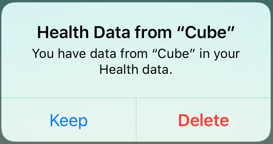
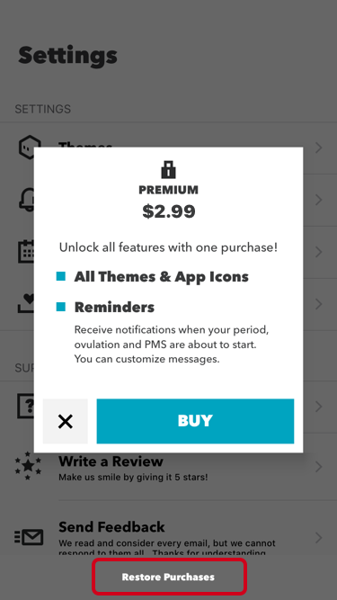

Help
Saved data and backup
Your datas recorded by Cube is saved in Apple Health(HealthKit).
We don't have your record in any other server.
Please note that you can not be restore health data deleted from Apple Health.
When deleting Cube app
When deleting the app, it is possible to select whether to leave recorded data or not to leave.
Please choice that fits your purpose.
When trying to delete Cube iPhone app, the following dialog will be displayed.

If you select "Delete", the following dialog will be displayed.

Please select "Keep" if you want to keep your datas.
If you select "Delete", all datas will be deleted.
You can not restore datas if you delete it.
Thank you for your attention.
(You can not restore "healthcare data only" using backup of iCloud or iTunes)
When changing iPhone device
Please migrate your datas using iPhone backup.
Please refer to Backing up Apple Healthcare Information for how to backup.
If you use iTunes's backup, please check "Encrypt iPhone backup".
Restore Purchases
If you already purchased PREMIUM, you can restore by "Restore Purchases" button.

If you can not restore, please check your account of iTunes Store.
You must login with the same account as purchased.
For inquiries regarding purchase, please contact Apple Inc.